1 / 20
I. The Genesis of the Internet

In the primordial chaos of the digital void, the Internet emerged as a revolutionary force, weaving together disparate minds across the globe. Born from the ARPANET in the late 1960s, it evolved into the World Wide Web in the 1990s, thanks to visionaries like Tim Berners-Lee.
This interconnected network democratized information, fostering innovation, communication, and commerce on an unprecedented scale. The Internet's genesis laid the foundation for the digital age, where ideas could spread like wildfire, setting the stage for the cultural phenomena that would follow.
2 / 20
II. The Rise of Memes
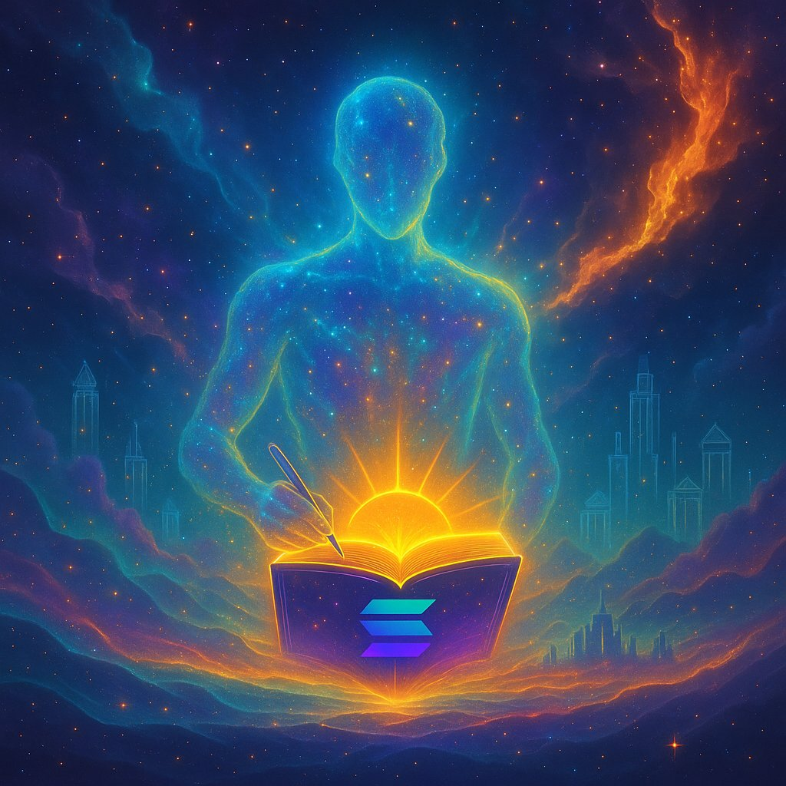
From the early days of image macros on forums like 4chan to the viral sensations on platforms like Reddit and Twitter, memes have become the lingua franca of the Internet. Coined by Richard Dawkins in 1976, the term "meme" describes ideas that propagate through culture.
In the digital era, memes evolved into humorous, relatable content that captures collective experiences, often using images, videos, and text. Their rapid spread and adaptability have made them powerful tools for social commentary, marketing, and community building.
3 / 20
III. Memecoins on the Solana Blockchain

Solana, known for its high-speed and low-cost transactions, has become a fertile ground for memecoins. Launched in 2020 by Anatoly Yakovenko, Solana's innovative Proof of History consensus mechanism enables thousands of transactions per second.
Memecoins like BONK and WIF have thrived here, leveraging Solana's efficiency to create vibrant, community-driven economies. These tokens blend humor and speculation, attracting a new wave of users to the blockchain.
4 / 20
IV. The Evolution of Memecoins

Memecoins have evolved from simple joke currencies like Dogecoin to sophisticated assets with real utility. On Solana, this evolution is marked by integrations with DeFi protocols, NFTs, and gaming.
What began as viral hype has matured into projects with governance tokens, staking mechanisms, and charitable initiatives, demonstrating the potential for memecoins to drive meaningful engagement and innovation.
5 / 20
V. The Emergence of BONK
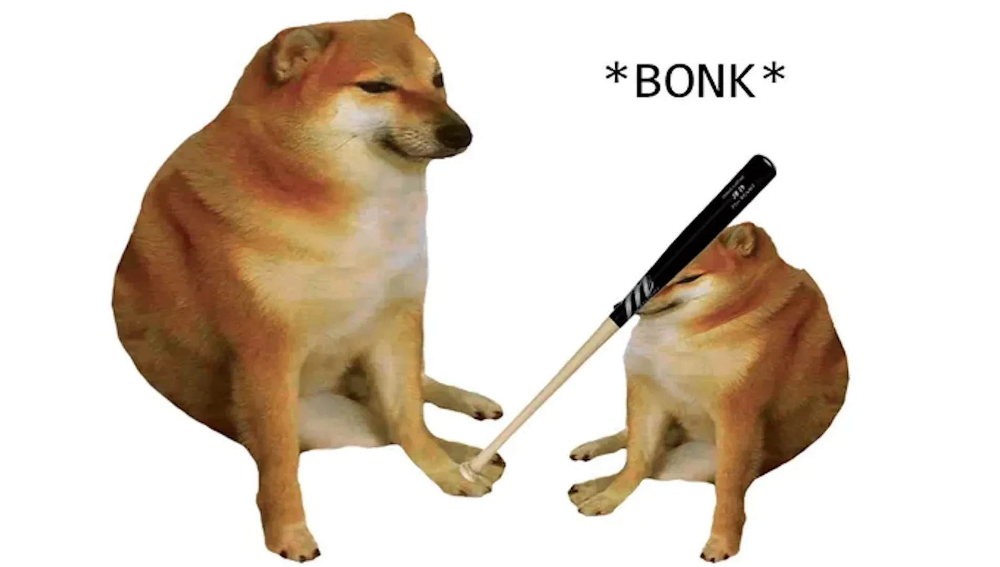
BONK, Solana's first major memecoin, emerged as a response to the FTX collapse, aiming to restore community spirit. Launched in December 2022, it quickly gained traction through airdrops to Solana users and NFT holders.
BONK's success revitalized the Solana ecosystem, proving that memecoins could serve as catalysts for recovery and growth in turbulent times.
6 / 20
VI. The Birth of WIF
dogwifhat (WIF), featuring a Shiba Inu wearing a knitted hat, captured the imagination of the Solana community in late 2023. Its absurd yet endearing mascot propelled it to viral fame, with listings on major exchanges and integrations into various dApps.
WIF exemplifies how simple, relatable concepts can explode in popularity within the fast-paced Solana environment.
7 / 20
VII. The Future of Memecoins
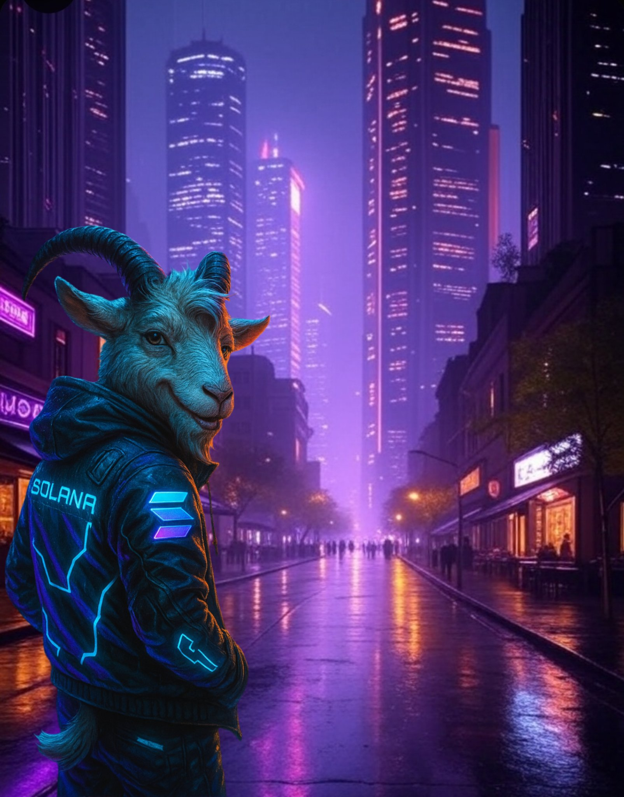
As Solana continues to scale with upgrades like Firedancer, memecoins are poised to play a larger role in Web3. Future developments may include AI-integrated memes, cross-chain interoperability, and sustainable tokenomics.
The Book of Solana envisions a future where memecoins not only entertain but also empower users in decentralized economies.
8 / 20
VIII. The Integration of Memecoins and DeFi
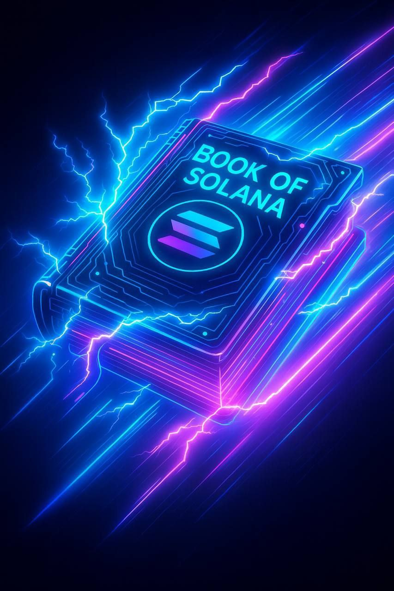
On Solana, memecoins are increasingly integrated with DeFi platforms like Raydium and Jupiter. This fusion allows for liquidity provision, yield farming, and automated trading, turning fun tokens into financial instruments.
Such integrations enhance utility and attract serious investors to the memecoin space.
9 / 20
IX. The Role of Memecoins in Community Building
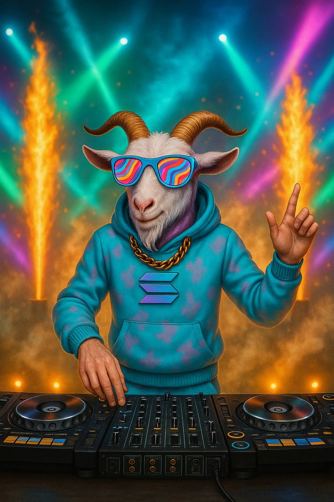
Memecoins foster strong communities through shared humor and collective goals. On Solana, projects like $BOOS encourage participation via raids, contests, and governance.
These tokens create a sense of belonging, turning holders into active contributors to the ecosystem's growth and narrative.
10 / 20
X. Challenges and Opportunities
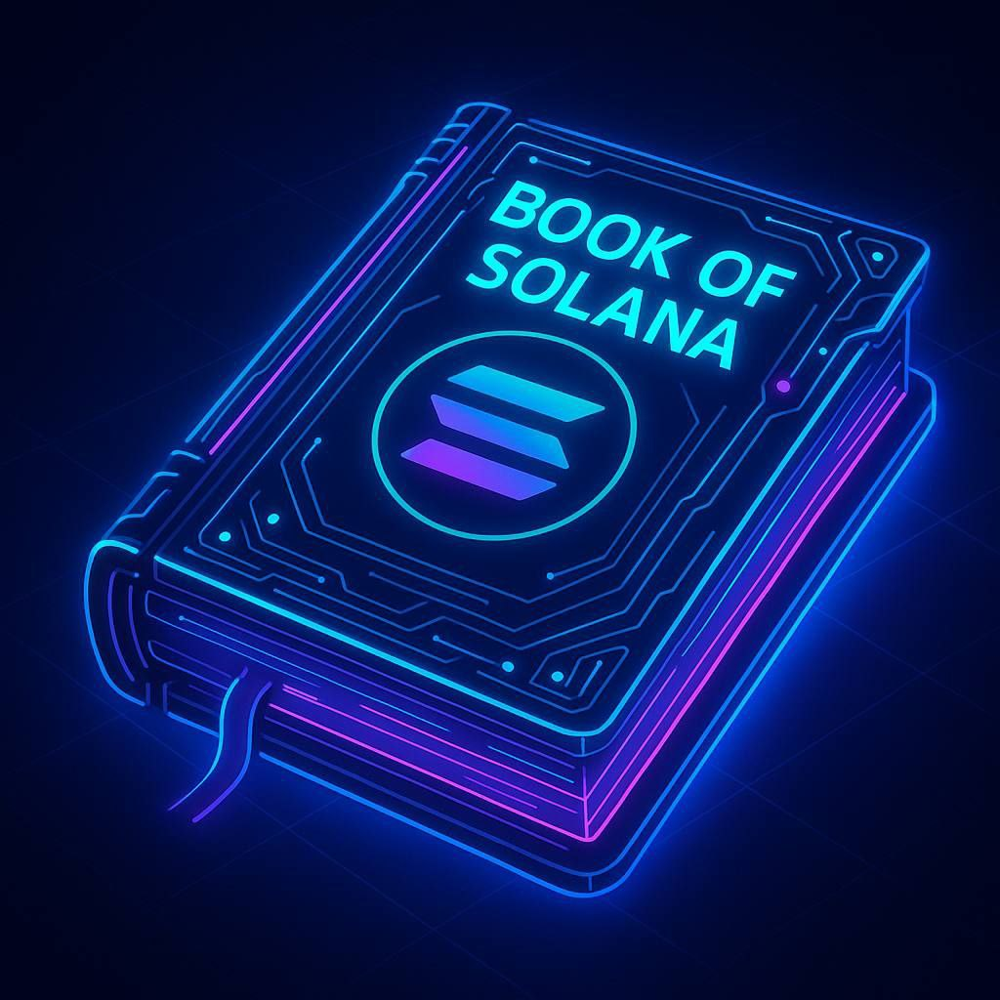
While memecoins face volatility and regulatory scrutiny, Solana's speed offers opportunities for innovation. Challenges like network congestion are being addressed, opening doors for more stable and feature-rich memecoin projects.
11 / 20
XI. The Potential Impact of Memecoins on Society
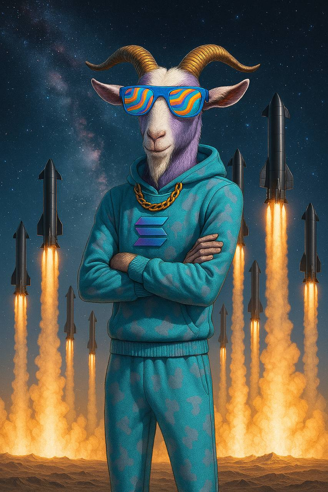
Memecoins democratize finance, introducing new generations to blockchain. On Solana, they promote financial literacy and community-driven philanthropy, potentially reshaping societal views on money and collaboration.
12 / 20
XII. Regulation and Security in Memecoin Trading
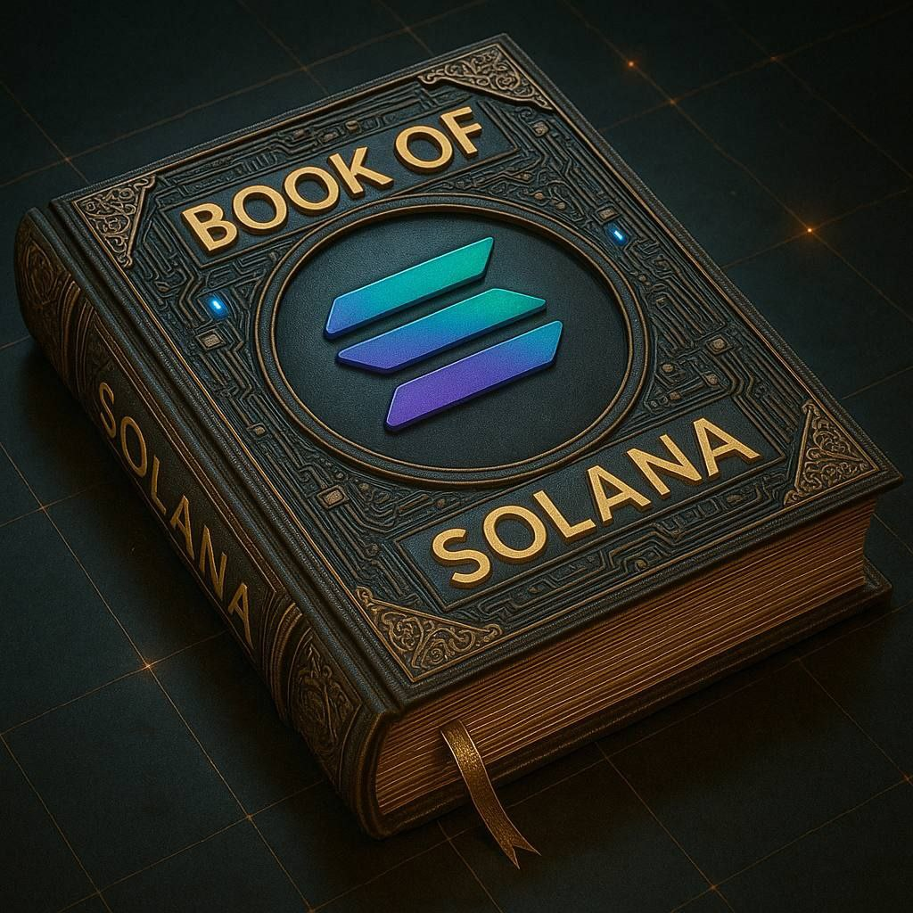
As memecoins grow, regulatory frameworks evolve. Solana's ecosystem emphasizes security through audits and decentralized exchanges, helping mitigate rugs and scams while complying with emerging laws.
13 / 20
XIII. A Bridge Between Digital and Real-World Value
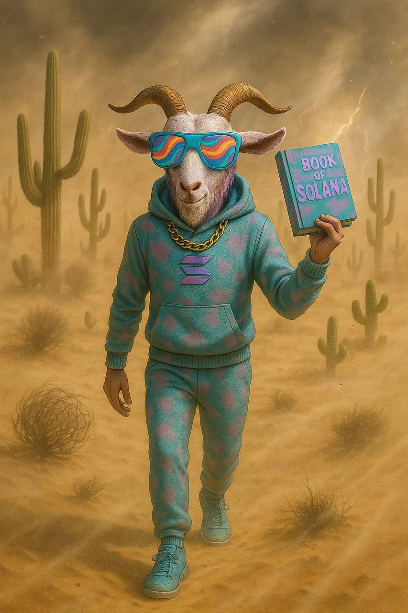
Memecoins on Solana are bridging digital assets with real-world applications, from merchandise to events. This connection enhances their value beyond speculation, creating tangible benefits for holders.
14 / 20
XIV. The Influence of Memecoins on the Future of Crypto
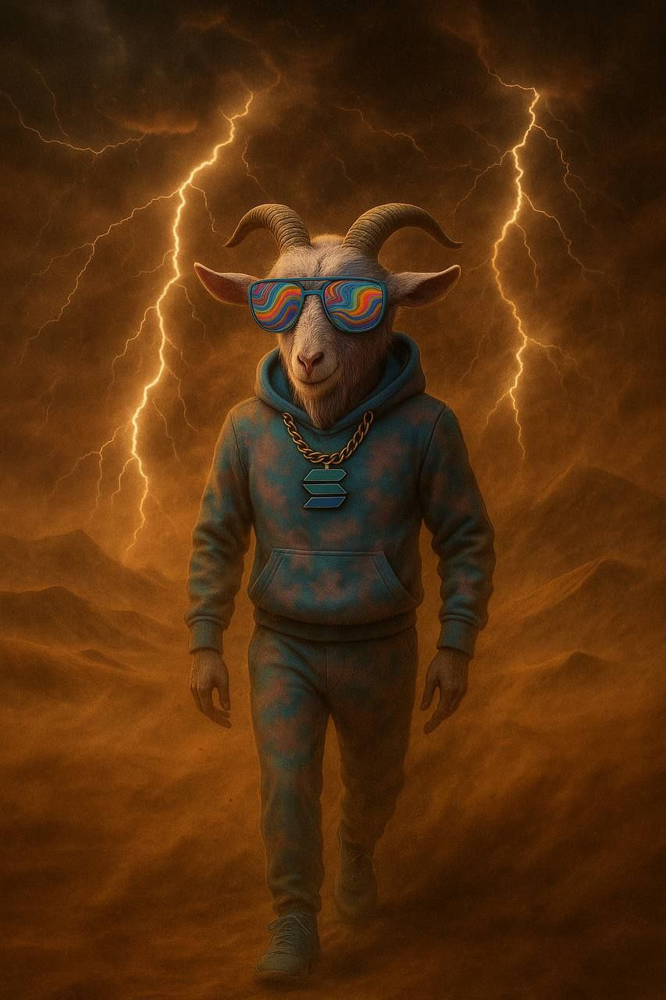
Memecoins drive adoption and innovation on Solana, influencing broader crypto trends. Their cultural impact could shape the next era of blockchain, blending entertainment with technology.
15 / 20
XV. The Role of Memecoins in the Metaverse
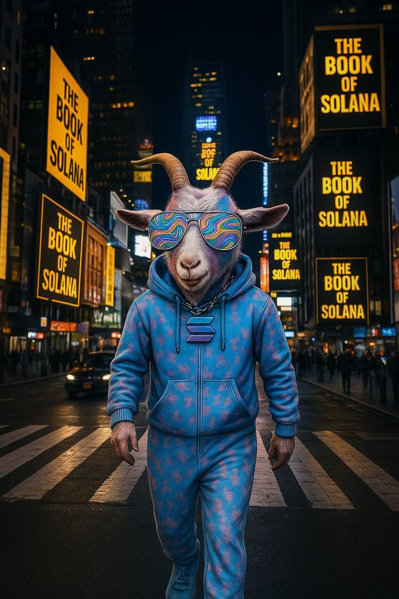
In Solana-based metaverses, memecoins serve as in-game currencies and social tokens, enhancing immersive experiences and virtual economies.
16 / 20
XVI. The Potential of Memecoins as Decentralized Currencies
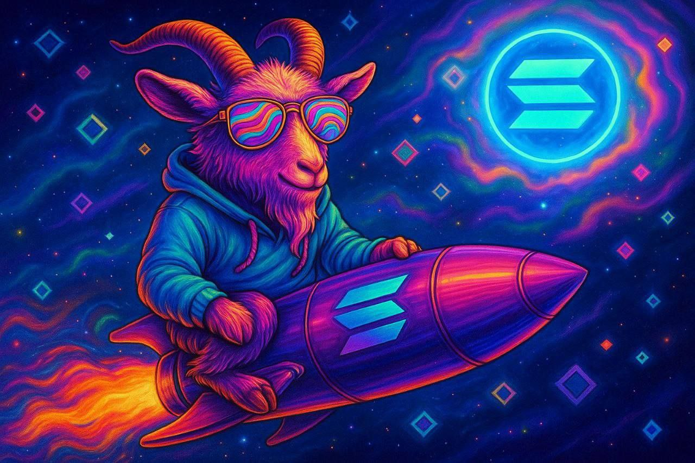
With Solana's scalability, memecoins could evolve into everyday decentralized currencies, facilitating microtransactions and global remittances with speed and low fees.
17 / 20
XVII. The Eternal Legacy of $BOOS
As the chronicler of Solana's memecoin saga, $BOOS stands eternal, inviting all to contribute to its pages and shape the future of decentralized storytelling.
18 / 20
XVIII. The Surge of $POPCAT in 2025

In 2025, $POPCAT exploded as a top Solana memecoin, reaching over $1B market cap with its viral cat-popping meme. Driven by community hype and listings on major exchanges, it symbolized the playful yet profitable side of Solana's ecosystem, attracting millions in volume.
19 / 20
XIX. GOATseus Maximus: The New GOAT
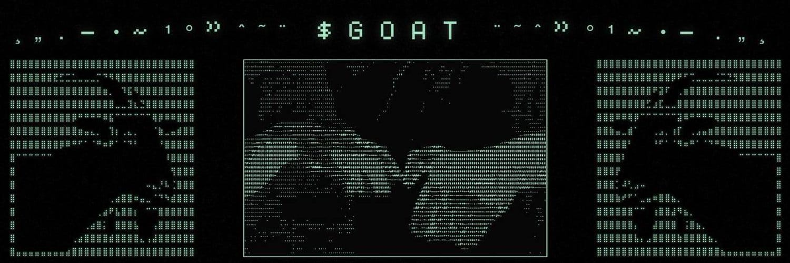
$GOAT (GOATseus Maximus) emerged in 2025 as a contender for Solana's top spot, blending goat memes with community-driven utility. Its rapid rise to $500M+ cap highlighted Solana's speed in turning absurd ideas into massive value.
20 / 20
XX. FARTCOIN and Absurd Memes
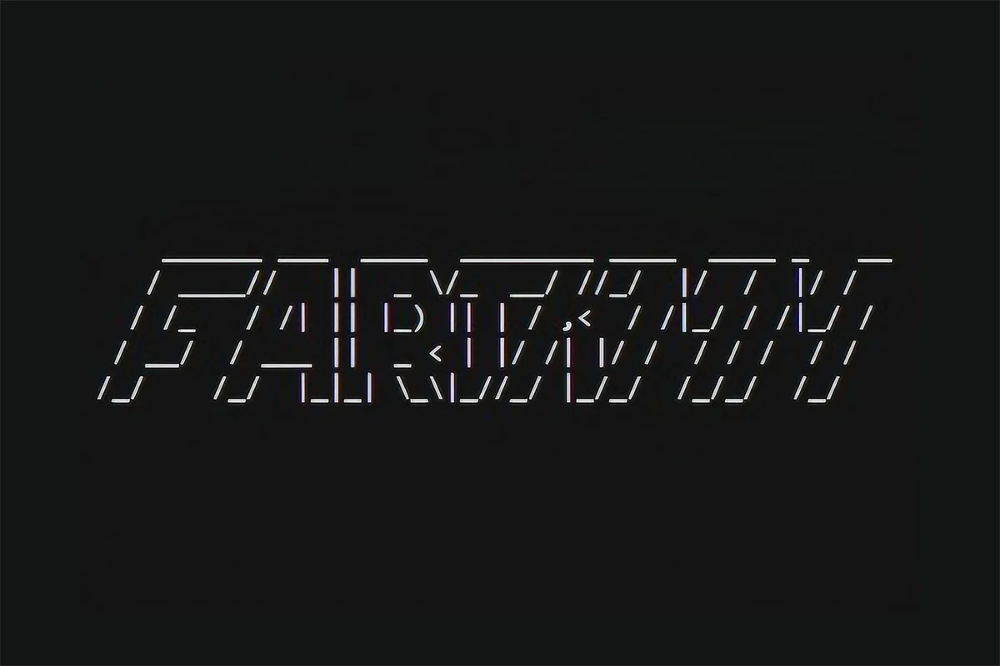
FARTCOIN captured 2025's absurd meme trend on Solana, hitting high volumes with its humorous theme. It proved that even the silliest concepts can thrive on Solana's low-fee, high-speed chain, drawing in fun-loving traders.